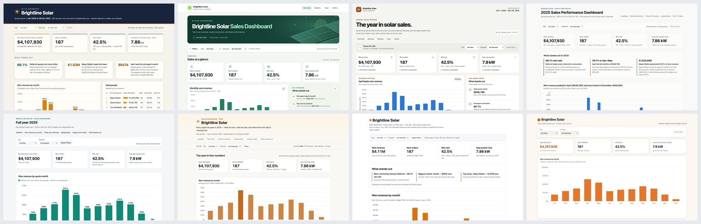

Benchmarks · run on 19 November 2026
What was run, and what it showed
Each of these is a set of real requests in one studio, with the results checked by something other than the model that produced them. Each also says what it does not show.
- Models given the same job
- 28
- Passed every check
- 19
- Cheapest run that passed
- $0.04
- Dearest run that passed
- $2.00
- Spent on the comparison
- $16.41
Comparison 1
One job, 28 models
Every model got the same request and the same 453-row data file, in a new project: build an interactive sales dashboard with four headline numbers, three charts, a leaderboard, a sortable table of the 15 largest orders, filters that recompute everything, three findings, light and dark, and a phone layout. The data was generated with a fixed seed, so the right numbers were known. Each page was then opened in a real browser and put through eleven checks.

Not price
Nineteen passed every check, from a 4-cent run to a 2-dollar one. The three dearest runs were no more correct than the cheapest.
Claude Sonnet 5.5
Through OpenRouter: every check in 75 seconds for $0.27. On a Claude plan, Sonnet, Opus and Fable all passed in under five minutes.
Haiku, GLM, DeepSeek
Claude Haiku 5.5 ($0.04), GLM 5.3 Flash ($0.05) and DeepSeek V4.1 Flash ($0.07) each built a correct, working dashboard.
Four built nothing
One ended as completed after loading two skills; three had built nothing when the 15-minute limit stopped them.
One request per model. It shows what a model did once in this studio, through one route (a LiteLLM gateway and OpenRouter, or a Claude plan). It does not show how often a model would do it again, and passing every check is not the same as a good-looking page: the pictures are there for that.
Comparison 2
A simpler request, 12 models
Run first, the same day: "make this project's page a pricing page with three plans, then say what you built". The agent had to read the page, write it, look at it in the browser and answer. Each page was checked for the three prices. This run is what found the two faults listed under the table.
| Model | Result | Time | Cost |
|---|---|---|---|
deepseek/deepseek-v4.1-flash | Worked | 45 s | $0.011 |
z-ai/glm-5.3-flash | Worked | 53 s | $0.010 |
openai/gpt-6-luna | Worked | 130 s | $0.014 |
minimax/minimax-m3.1-flash | Worked, with 25 model calls, the most of any | 112 s | $0.032 |
z-ai/glm-5.3-flashx | Worked | 94 s | $0.045 |
google/gemini-4-hydrogen | Worked | 59 s | $0.116 |
moonshotai/kimi-k3.1-pro | Worked | 103 s | $0.118 |
openai/gpt-6.1-terra | Worked; one edit call was malformed and it tried again | 113 s | $0.147 |
x-ai/grok-4.7 | Worked | 98 s | $0.162 |
openai/gpt-6.2-sol | Worked on the third try; its provider rate-limited the first two | 69 s | $0.176 |
moonshotai/kimi-k2.7-code | 1 of 2: the first request ended with no edit and no answer | 46 s | $0.044 |
z-ai/glm-5.3 | Failed: a text-only model, refused the moment the agent looked at its page |
Text-only models
The agent sees its page by opening a screenshot, and a text-only model's provider refuses the request that carries one. The studio now keeps pictures from such models; two of them then passed every check in the larger comparison.
Done, with nothing done
A request can end as completed with no edit and no answer. The studio does not catch that yet. The same model did it again in the larger comparison.
Check
Is the cost shown the cost charged?
The studio shows what every request cost. Two things were compared with it: the provider's own counter for the day, and the gateway's log of every request, token by token.
$11.58 against $11.66
What the gateway recorded for the day, and what the provider's own usage counter said for the same key, read a few minutes apart while requests were still running.
Helpers were not counted
Where a gateway's log cannot be read, the studio prices a request from its own token counts. Those held only the main agent's: with one helper agent, 17,104 written tokens where the true total was 28,197.
After the fix, four real requests on a gateway model, each compared with the gateway's log of its successful requests:
| Request | Studio: tokens in | Gateway: tokens in | Studio: out | Gateway: out |
|---|---|---|---|---|
| With a helper agent (5 model calls) | 61,116 | 61,116 | 1,475 | 1,475 |
| The next request of the same conversation | 40,009 | 40,009 | 113 | 113 |
| A request stopped part-way (marked "at least") | 69,041 | 69,041 | 375 | 375 |
| The request after the stop | 25,886 | 25,886 | 3 | 3 |
What this cannot fix: a figure worked out from tokens is the list price times the tokens. A route that sends a request to a dearer provider of the same model charges more, and only the gateway's own log knows. In these runs DeepSeek's Flash models cost two to four times their list price that way.
Every change
The tests behind it
On the day of these runs the studio had 1,655 server tests and 475 interface tests, all passing, with no model call in any of them: a scripted stand-in plays the agent. What only a real run can show is run for real and written down with what was and was not checked, as on this page.